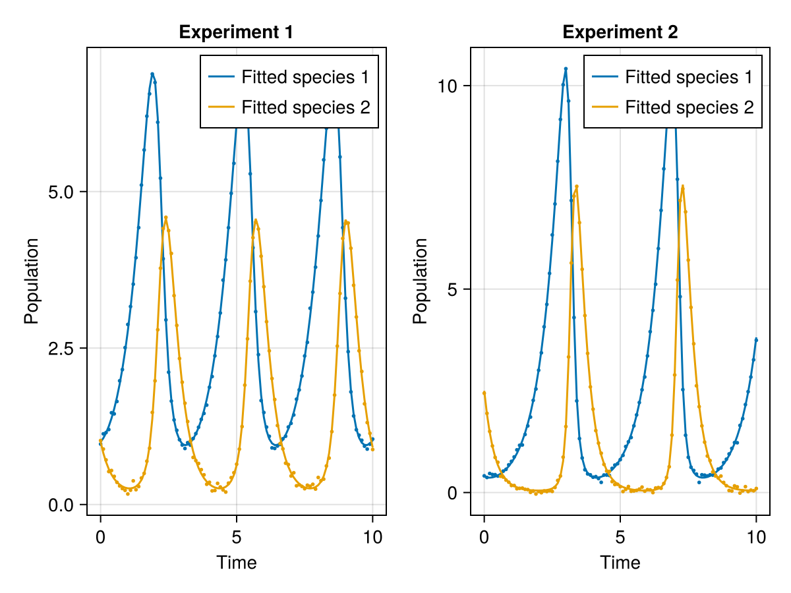

Joint estimation over multiple Lotka–Volterra experiments


More data usually means better estimates. Here two experiments start from different initial conditions and share the four model rates. We first fit the first experiment alone, then use it to warm-start a joint fit, and compare the uncertainties.
How Experiments separates shared parameters from experiment-local data and initial states.
using Corleone: SciMLBase
using CorleoneInverse, LuxCore, ComponentArrays, OrdinaryDiffEqTsit5, NonlinearSolve
using StableRNGs, CairoMakie
using TransformVariables: asℝ₊
function lotka_volterra!(du, u, p, t)
x, y = u
α, β, δ, γ = p
du[1] = α * x - β * x * y
du[2] = -δ * y + γ * x * y
return nothing
end
rng = StableRNG(42)
p_true = [1.5, 1.0, 3.0, 1.0]
prob = ODEProblem(
lotka_volterra!, [1.0, 1.0], (0.0, 10.0), p_true; abstol = 1.0e-9, reltol = 1.0e-9
)
t = collect(0.0:0.1:10.0)
function measure(u0)
truth = solve(remake(prob; u0), Tsit5(); saveat = t)
y = reduce(hcat, truth.u) .+ 0.05 .* randn(rng, 2, length(t))
return Experiment(1 => (t, y[1, :], 0.05), 2 => (t, y[2, :], 0.05); u0)
end
data_1, data_2 = measure([1.0, 1.0]), measure([0.4, 2.5])(Experiment{}((Observation{}(1, [0.0, 0.1, 0.2, 0.3, 0.4, 0.5, 0.6, 0.7, 0.8, 0.9, 1.0, 1.1, 1.2, 1.3, 1.4, 1.5, 1.6, 1.7, 1.8, 1.9, 2.0, 2.1, 2.2, 2.3, 2.4, 2.5, 2.6, 2.7, 2.8, 2.9, 3.0, 3.1, 3.2, 3.3, 3.4, 3.5, 3.6, 3.7, 3.8, 3.9, 4.0, 4.1, 4.2, 4.3, 4.4, 4.5, 4.6, 4.7, 4.8, 4.9, 5.0, 5.1, 5.2, 5.3, 5.4, 5.5, 5.6, 5.7, 5.8, 5.9, 6.0, 6.1, 6.2, 6.3, 6.4, 6.5, 6.6, 6.7, 6.8, 6.9, 7.0, 7.1, 7.2, 7.3, 7.4, 7.5, 7.6, 7.7, 7.8, 7.9, 8.0, 8.1, 8.2, 8.3, 8.4, 8.5, 8.6, 8.7, 8.8, 8.9, 9.0, 9.1, 9.2, 9.3, 9.4, 9.5, 9.6, 9.7, 9.8, 9.9, 10.0], [0.9664874153942716, 1.1297597943861057, 1.150331106656938, 1.1982116180894362, 1.4663806002106126, 1.4490381362706424, 1.6467858702324574, 1.9771953064775427, 2.15642539765749, 2.506931674739062, 2.8771251016270805, 3.163884358742271, 3.520625522531465, 3.9433814094486075, 4.42392969191058, 5.103780040720648, 5.664784047246236, 6.2045599095947725, 6.561834305943222, 6.878664296025415, 6.742707154688576, 6.107867851529634, 5.214455843813046, 3.9268104035754314, 2.9499863037767993, 2.1140128773940967, 1.6529398591869853, 1.3522791224005497, 1.1861324991130633, 1.035800996621723, 0.9518205723589621, 0.8956715529534076, 0.9887152378642245, 0.9490789186553007, 1.054265957881749, 1.1332042096141688, 1.234435933167552, 1.3605169925013392, 1.455958815522138, 1.5886367948694078, 1.8735196412795871, 2.044783105150087, 2.375730758275464, 2.683955502210517, 3.0609041312893885, 3.585508104556532, 3.90980738295553, 4.422756992529499, 4.971731551736821, 5.451519816762232, 6.118667500576789, 6.655430856678627, 6.963049423613487, 6.766583559247935, 6.380350819035585, 5.284008620597051, 4.102531518138571, 3.0823606821153198, 2.3955184084996457, 1.6615339979321528, 1.4699425205434176, 1.2375850876474415, 1.0898002484030924, 0.9049470312194338, 0.8965579260140185, 0.9355947519794613, 0.9613374676533603, 1.050575071904962, 1.0913838256869512, 1.2386152712422303, 1.297509798236567, 1.431483102031311, 1.6829106341263593, 1.8317865135335483, 2.05408167396583, 2.373894572470369, 2.5909357474193113, 3.1355945464612076, 3.3935251769788057, 3.7927877962681684, 4.290724506323276, 4.8576185878443, 5.507018252069812, 6.011188426282069, 6.512018113219988, 6.837615221004076, 6.919318495592746, 6.454653813773815, 5.553834736662649, 4.423814875654157, 3.2960454126440712, 2.442714792411078, 1.8004159463758593, 1.4155540055808882, 1.1950853685733285, 1.1079600265952783, 1.0268445191248154, 0.9328984860622481, 0.8861493796017608, 0.9651102846979739, 1.0460798860680451], 0.05), Observation{}(2, [0.0, 0.1, 0.2, 0.3, 0.4, 0.5, 0.6, 0.7, 0.8, 0.9, 1.0, 1.1, 1.2, 1.3, 1.4, 1.5, 1.6, 1.7, 1.8, 1.9, 2.0, 2.1, 2.2, 2.3, 2.4, 2.5, 2.6, 2.7, 2.8, 2.9, 3.0, 3.1, 3.2, 3.3, 3.4, 3.5, 3.6, 3.7, 3.8, 3.9, 4.0, 4.1, 4.2, 4.3, 4.4, 4.5, 4.6, 4.7, 4.8, 4.9, 5.0, 5.1, 5.2, 5.3, 5.4, 5.5, 5.6, 5.7, 5.8, 5.9, 6.0, 6.1, 6.2, 6.3, 6.4, 6.5, 6.6, 6.7, 6.8, 6.9, 7.0, 7.1, 7.2, 7.3, 7.4, 7.5, 7.6, 7.7, 7.8, 7.9, 8.0, 8.1, 8.2, 8.3, 8.4, 8.5, 8.6, 8.7, 8.8, 8.9, 9.0, 9.1, 9.2, 9.3, 9.4, 9.5, 9.6, 9.7, 9.8, 9.9, 10.0], [1.0223560921231691, 0.8865612156001189, 0.7132501344226423, 0.5272171308721427, 0.5436802681252468, 0.44987714024551895, 0.3554098921818023, 0.29750583459144025, 0.2558552035414387, 0.22703511654138142, 0.16867848700903681, 0.22898052510718547, 0.378632887958624, 0.23749249913742684, 0.28770111146382593, 0.4235595710065035, 0.498247866659495, 0.6929243191555466, 0.9003132345917978, 1.4715688736857848, 1.9762550726920933, 2.7926482983303043, 3.775114147911712, 4.411854774194645, 4.588644999060848, 4.376588081168353, 4.011809426363474, 3.3374699452303633, 2.862078801730979, 2.3329197008599727, 1.9542547398421555, 1.6189690991609325, 1.326446183406602, 1.0141861326989234, 0.7528256821206334, 0.7023284381010759, 0.6563031874405711, 0.5574400720802527, 0.47473750817745664, 0.3244081409589376, 0.35552495025132347, 0.2183783801162833, 0.22491528365064078, 0.3384795535765465, 0.28064777287190973, 0.2333856356989915, 0.19967203303790532, 0.3417672831785045, 0.4297707364640932, 0.5084984742880306, 0.6447728389959875, 0.8857744959814691, 1.2456621337889175, 1.9076513731639673, 2.647923592750244, 3.5688032081455914, 4.2633888940709115, 4.512349701034516, 4.401511607963358, 3.967397209971623, 3.4803322865002975, 2.9212766725574104, 2.4555239823846, 2.013063337987702, 1.6775073116951573, 1.2629335243501234, 0.973982414237325, 0.8895478933851675, 0.6606317095526886, 0.6390255599315118, 0.4566623531165289, 0.5077495969937966, 0.3003036396736748, 0.3155644109540907, 0.28981801311759625, 0.2533149957935359, 0.30882780337299587, 0.2927576246888841, 0.3236337836697596, 0.2475953070953543, 0.4326337341208346, 0.381158603962116, 0.40609525984347655, 0.6166966698510297, 0.74293233178906, 1.165179689942299, 1.7491279086188138, 2.53157917869787, 3.3721532481330314, 4.251110954084843, 4.491635321228026, 4.498034456879133, 4.0943412408845825, 3.5032981960461855, 2.997045130599773, 2.4561915385428374, 2.1260928310594203, 1.6094906797852995, 1.309821891535068, 1.1379341153632032, 0.8792160046815896], 0.05)), [1.0, 1.0], [0.0, 0.1, 0.2, 0.3, 0.4, 0.5, 0.6, 0.7, 0.8, 0.9, 1.0, 1.1, 1.2, 1.3, 1.4, 1.5, 1.6, 1.7, 1.8, 1.9, 2.0, 2.1, 2.2, 2.3, 2.4, 2.5, 2.6, 2.7, 2.8, 2.9, 3.0, 3.1, 3.2, 3.3, 3.4, 3.5, 3.6, 3.7, 3.8, 3.9, 4.0, 4.1, 4.2, 4.3, 4.4, 4.5, 4.6, 4.7, 4.8, 4.9, 5.0, 5.1, 5.2, 5.3, 5.4, 5.5, 5.6, 5.7, 5.8, 5.9, 6.0, 6.1, 6.2, 6.3, 6.4, 6.5, 6.6, 6.7, 6.8, 6.9, 7.0, 7.1, 7.2, 7.3, 7.4, 7.5, 7.6, 7.7, 7.8, 7.9, 8.0, 8.1, 8.2, 8.3, 8.4, 8.5, 8.6, 8.7, 8.8, 8.9, 9.0, 9.1, 9.2, 9.3, 9.4, 9.5, 9.6, 9.7, 9.8, 9.9, 10.0]), Experiment{}((Observation{}(1, [0.0, 0.1, 0.2, 0.3, 0.4, 0.5, 0.6, 0.7, 0.8, 0.9, 1.0, 1.1, 1.2, 1.3, 1.4, 1.5, 1.6, 1.7, 1.8, 1.9, 2.0, 2.1, 2.2, 2.3, 2.4, 2.5, 2.6, 2.7, 2.8, 2.9, 3.0, 3.1, 3.2, 3.3, 3.4, 3.5, 3.6, 3.7, 3.8, 3.9, 4.0, 4.1, 4.2, 4.3, 4.4, 4.5, 4.6, 4.7, 4.8, 4.9, 5.0, 5.1, 5.2, 5.3, 5.4, 5.5, 5.6, 5.7, 5.8, 5.9, 6.0, 6.1, 6.2, 6.3, 6.4, 6.5, 6.6, 6.7, 6.8, 6.9, 7.0, 7.1, 7.2, 7.3, 7.4, 7.5, 7.6, 7.7, 7.8, 7.9, 8.0, 8.1, 8.2, 8.3, 8.4, 8.5, 8.6, 8.7, 8.8, 8.9, 9.0, 9.1, 9.2, 9.3, 9.4, 9.5, 9.6, 9.7, 9.8, 9.9, 10.0], [0.4101380206664011, 0.3703871765948306, 0.468358753346127, 0.4430623690054816, 0.4391499209449351, 0.4059481881131975, 0.41701700325253777, 0.5269357085849569, 0.5700901737470093, 0.6814302803663006, 0.7665511928751992, 0.8747820920927307, 1.0488005857468428, 1.1608510166310444, 1.1695085087877661, 1.4275009987792142, 1.637946108223708, 1.8547819158073313, 2.26583577817339, 2.5447601715893153, 3.0056654596416874, 3.4337215631345157, 4.073139057633954, 4.62424169525018, 5.3854545844131145, 6.33145560865969, 7.091752421795918, 8.14135268931879, 9.169949102167946, 10.022565427829509, 10.415885478457769, 9.62218532028216, 7.176919219625121, 4.300766145012662, 2.252033586711287, 1.3262442218203023, 0.8495525155726198, 0.560515857017697, 0.4586403764473211, 0.4354227842068085, 0.37767410558581027, 0.39142171422431, 0.343782617540132, 0.25041227035092795, 0.43055661476676627, 0.4295655773839374, 0.41966683774765284, 0.5942806970646131, 0.6743320821422649, 0.7083321444660786, 0.8081850764404072, 0.9144545061443714, 1.131167178932302, 1.2472710749020066, 1.3525850171762193, 1.6392910202927407, 1.9075896514737154, 2.21203315919218, 2.5243810034943235, 2.840670435784846, 3.358171398971809, 3.9532310325271087, 4.477418902166864, 5.119743787628717, 5.9959711659721515, 6.934982356548337, 7.9556404957800675, 9.039808372924346, 9.909995381002599, 10.300542822728278, 9.811632294148566, 7.698976368844619, 4.814150265330332, 2.529048924547758, 1.4085159395159157, 0.8665399859669305, 0.621284521688463, 0.5432529889469566, 0.4535304893078555, 0.24818184831293164, 0.43653663633074674, 0.42711574919323986, 0.4090922780366504, 0.43603343278146706, 0.4287252651197696, 0.42020530430776704, 0.5755873200400181, 0.6041250124465053, 0.735394501145673, 0.8184242136670169, 0.9484599277134471, 1.084722450057769, 1.2277011741209323, 1.223415254350368, 1.6489225191040036, 1.816713678643339, 2.161796905328125, 2.47880504016713, 2.8385486830125646, 3.2617061859676517, 3.7418758593846646], 0.05), Observation{}(2, [0.0, 0.1, 0.2, 0.3, 0.4, 0.5, 0.6, 0.7, 0.8, 0.9, 1.0, 1.1, 1.2, 1.3, 1.4, 1.5, 1.6, 1.7, 1.8, 1.9, 2.0, 2.1, 2.2, 2.3, 2.4, 2.5, 2.6, 2.7, 2.8, 2.9, 3.0, 3.1, 3.2, 3.3, 3.4, 3.5, 3.6, 3.7, 3.8, 3.9, 4.0, 4.1, 4.2, 4.3, 4.4, 4.5, 4.6, 4.7, 4.8, 4.9, 5.0, 5.1, 5.2, 5.3, 5.4, 5.5, 5.6, 5.7, 5.8, 5.9, 6.0, 6.1, 6.2, 6.3, 6.4, 6.5, 6.6, 6.7, 6.8, 6.9, 7.0, 7.1, 7.2, 7.3, 7.4, 7.5, 7.6, 7.7, 7.8, 7.9, 8.0, 8.1, 8.2, 8.3, 8.4, 8.5, 8.6, 8.7, 8.8, 8.9, 9.0, 9.1, 9.2, 9.3, 9.4, 9.5, 9.6, 9.7, 9.8, 9.9, 10.0], [2.440324562532237, 1.946335213730833, 1.5034522010116358, 1.144813262894346, 0.8641104189110569, 0.7439462269371147, 0.4002061133938134, 0.3796245375432076, 0.3061864579779194, 0.2546390341969551, 0.1731405046371583, 0.1727913913868867, 0.09323386168486762, 0.10276277406011215, 0.10870680978887008, 0.07979973074252679, 0.07205257525471405, 0.004733841405086883, 0.036802102632031486, -0.03554733633876405, 0.025383700954990478, -0.003643725359339607, 0.03905692261466928, 0.024680574418035797, 0.04512561118209414, 0.028255536864625203, 0.12466919403677171, 0.29825202012411284, 0.4068656733013536, 0.8697743120441565, 1.6216512279663793, 3.3320526611535675, 5.641714650901506, 7.285775694045854, 7.524402853786891, 6.632486276085705, 5.486393363547109, 4.349017301978588, 3.4196907923961612, 2.597340761071233, 2.048540726819004, 1.5219751190316884, 1.215159676923959, 0.9661094596273465, 0.6918480499043602, 0.5289848787315621, 0.5195420456399976, 0.2692092964431079, 0.197393385248469, 0.20271786907394013, 0.14450261728443334, 0.02514793510557152, 0.0772155191087241, 0.1475322386608024, 0.031960836756470545, 0.03930365077577112, 0.05418009145341887, 0.08345269228076276, 0.13351080454213332, 0.0340631518012154, 0.07119110273754137, 0.06514611129478887, -0.0010497875494617018, 0.11170851905655436, 0.12237907562971735, 0.10522847713169882, 0.22217760398948042, 0.3692884395582498, 0.6343459533225587, 1.4115373139611131, 2.8896222312368542, 5.223743959719959, 7.175978805045892, 7.463389737806638, 6.898334182958985, 5.7118827541620805, 4.550041046845668, 3.655879731966955, 2.6237145886787494, 2.110712273809827, 1.63871431212967, 1.238298073606809, 0.8981763990492028, 0.7863253493477962, 0.5049673224700406, 0.40745368004794746, 0.3598593515872131, 0.4048572706010658, 0.24725875646520062, 0.16900487514269422, 0.049701701802066345, 0.03873335772752891, 0.16366194994061176, 0.13927871649226006, -0.012687964555049142, 0.041062665211347334, 0.14455580191980352, 0.024217948455117905, 0.058739079213262956, 0.04326716295132549, 0.09903830299647234], 0.05)), [0.4, 2.5], [0.0, 0.1, 0.2, 0.3, 0.4, 0.5, 0.6, 0.7, 0.8, 0.9, 1.0, 1.1, 1.2, 1.3, 1.4, 1.5, 1.6, 1.7, 1.8, 1.9, 2.0, 2.1, 2.2, 2.3, 2.4, 2.5, 2.6, 2.7, 2.8, 2.9, 3.0, 3.1, 3.2, 3.3, 3.4, 3.5, 3.6, 3.7, 3.8, 3.9, 4.0, 4.1, 4.2, 4.3, 4.4, 4.5, 4.6, 4.7, 4.8, 4.9, 5.0, 5.1, 5.2, 5.3, 5.4, 5.5, 5.6, 5.7, 5.8, 5.9, 6.0, 6.1, 6.2, 6.3, 6.4, 6.5, 6.6, 6.7, 6.8, 6.9, 7.0, 7.1, 7.2, 7.3, 7.4, 7.5, 7.6, 7.7, 7.8, 7.9, 8.0, 8.1, 8.2, 8.3, 8.4, 8.5, 8.6, 8.7, 8.8, 8.9, 9.0, 9.1, 9.2, 9.3, 9.4, 9.5, 9.6, 9.7, 9.8, 9.9, 10.0]))Fit the first experiment
The shooting layer only supplies the solver. The experiments own the parameters: the four rates are shared and positive.
shooting = ShootingLayer(prob, Tsit5())
shared = Tunable(1:4; default = [1.4, 0.95, 2.8, 0.95], transform = asℝ₊) => nothing
first_experiment = Experiments(prob, shared; experiments = (first = data_1,))
ps_1, st_1 = LuxCore.setup(rng, first_experiment)
model_1 = CorleoneDynamicOptProblem(shooting, first_experiment; ps = ps_1, st = st_1)
fit_1 = solve(NonlinearLeastSquaresProblem(model_1), LevenbergMarquardt())
@assert SciMLBase.successful_retcode(fit_1)
estimate_1 = ParameterEstimate(model_1, fit_1.u)ParameterEstimate (RSS = 205.0, dof = 198)
index value std. error 95.0% interval
1 1.5014 0.00317 [1.4952, 1.5076]
2 1.0022 0.00288 [0.99655, 1.0078]
3 2.9947 0.00923 [2.9767, 3.0128]
4 0.99859 0.00335 [0.99204, 1.0052]Add the second experiment
Initial values belong to each experiment; the tunable rates belong to shared. Because the shared layout is unchanged, the first fit is a valid warm start.
experiments = Experiments(prob, shared; experiments = (first = data_1, second = data_2))
ps, st = LuxCore.setup(rng, experiments)
_, reconstruct = pack(default_vectorizer(), ps)
warm_start = reconstruct(fit_1.u)
model = CorleoneDynamicOptProblem(shooting, experiments; ps = warm_start, st)
fit = solve(NonlinearLeastSquaresProblem(model), LevenbergMarquardt())
@assert SciMLBase.successful_retcode(fit)
estimate = ParameterEstimate(model, fit.u)
@assert all(estimate.std_errors .< estimate_1.std_errors)
(;
joint_estimate = estimate.x,
single_experiment_std_errors = estimate_1.std_errors,
joint_std_errors = estimate.std_errors,
)(joint_estimate = [1.5013328050823163, 1.001628567654215, 2.995363590504229, 0.9984393492310166], single_experiment_std_errors = [0.003170293627782442, 0.002878054406042061, 0.00923372230641507, 0.0033541923749602623], joint_std_errors = [0.0012993988565488698, 0.0017759825755194344, 0.004123224936362, 0.0015456718050875743])Every standard error shrinks with the second experiment: the extra data pays off.
trajectories, _ = shooting(experiments, reconstruct(fit.u), st)
@assert first(trajectories[2].u) == [0.4, 2.5]
figure = Figure()
for (i, (trajectory, data)) in enumerate(zip(trajectories, (data_1, data_2)))
axis = CairoMakie.Axis(
figure[1, i]; xlabel = "Time", ylabel = "Population", title = "Experiment $i"
)
for (j, observation) in enumerate(data.observations)
lines!(axis, trajectory.t, getindex.(trajectory.u, j); label = "Fitted species $j")
scatter!(axis, observation.t, observation.y; markersize = 4)
end
axislegend(axis)
end
figure
Acknowledgements
This example is adapted from Christoph Plate (@chplate)'s example in Corleone.jl PR #168.
Appendix
This example was built using these direct dependencies,
using Pkg
Pkg.status()Status `~/_work/Corleone.jl/Corleone.jl/docs/Project.toml`
[13f3f980] CairoMakie v0.15.17
[b0b7db55] ComponentArrays v0.15.50
[2751e0db] Corleone v2.1.0 `~/_work/Corleone.jl/Corleone.jl`
[f6133253] CorleoneInverse v0.1.0 `../lib/CorleoneInverse`
[6590a4b1] CorleoneOED v2.0.0 `../lib/CorleoneOED`
[311a05b2] DemoCards v0.5.5
[31c24e10] Distributions v0.25.134
[e30172f5] Documenter v1.20.0
[daee34ce] DocumenterCitations v1.5.0
[d12716ef] DocumenterInterLinks v1.1.0
[1c52b33b] DocumenterLandingPage v0.2.2
[f6369f11] ForwardDiff v1.4.8
[b6b21f68] Ipopt v1.16.0
[98b081ad] Literate v2.21.1
⌃ [16fef848] LiveServer v1.5.0
[b2108857] Lux v1.31.6
[bb33d45b] LuxCore v1.5.4
[10bdffc8] MaterialDocs v0.2.2
[961ee093] ModelingToolkit v11.46.1
[8913a72c] NonlinearSolve v4.32.0
[7f7a1694] Optimization v5.9.1
[22f7324a] OptimizationLBFGSB v1.5.3
[fd9f6733] OptimizationMOI v1.6.1
[42dfb2eb] OptimizationOptimisers v0.3.26
[6ad6398a] OrdinaryDiffEqBDF v2.4.14
[127b3ac7] OrdinaryDiffEqNonlinearSolve v2.9.10
[43230ef6] OrdinaryDiffEqRosenbrock v2.7.5
[b1df2697] OrdinaryDiffEqTsit5 v2.1.5
[0bca4576] SciMLBase v3.58.0
[860ef19b] StableRNGs v1.1.0
[2efcf032] SymbolicIndexingInterface v0.3.56
[84d833dd] TransformVariables v0.8.28
[ddb6d928] YAML v0.4.17
[2a0f44e3] Base64 v1.11.0
[37e2e46d] LinearAlgebra v1.13.0
[9a3f8284] Random v1.11.0
Info Packages marked with ⌃ have new versions available and may be upgradable.
and using this machine and Julia version.
using InteractiveUtils
InteractiveUtils.versioninfo()Julia Version 1.13.3
Commit 67ac47b9cd8 (2026-10-25 15:28 UTC)
Build Info:
Official https://julialang.org release
Platform Info:
OS: Linux (x86_64-linux-gnu)
CPU: 128 × AMD EPYC 7513 32-Core Processor
WORD_SIZE: 64
LLVM: libLLVM-20.1.8 (ORCJIT, znver3)
GC: Built with stock GC
Threads: 1 default, 1 interactive, 1 GC (on 4 virtual cores)
Environment:
JULIA_CPU_THREADS = 4
JULIA_NUM_PRECOMPILE_TASKS = 4
A more complete overview of all dependencies and their versions is also provided.
using Pkg
Pkg.status(; mode = PKGMODE_MANIFEST)Status `~/_work/Corleone.jl/Corleone.jl/docs/Manifest.toml`
[47edcb42] ADTypes v1.24.0
[14f7f29c] AMD v0.5.4
[a4c015fc] ANSIColoredPrinters v0.0.1
[621f4979] AbstractFFTs v1.5.0
[6e696c72] AbstractPlutoDingetjes v1.4.1
[1520ce14] AbstractTrees v0.4.5
[7d9f7c33] Accessors v0.1.46
[79e6a3ab] Adapt v4.8.0
[4f381ef7] AdaptiveArrayPools v0.3.12
[35492f91] AdaptivePredicates v1.2.0
[66dad0bd] AliasTables v1.1.3
[27a7e980] Animations v0.4.2
[dce04be8] ArgCheck v2.5.0
[ec485272] ArnoldiMethod v0.4.0
[4fba245c] ArrayInterface v7.30.2
[4c555306] ArrayLayouts v1.16.0
[a9b6321e] Atomix v1.7.0
[67c07d97] Automa v1.2.0
[13072b0f] AxisAlgorithms v1.1.0
[39de3d68] AxisArrays v0.4.8
[ab4f0b2a] BFloat16s v0.6.5
[aae01518] BandedMatrices v1.14.0
[198e06fe] BangBang v0.4.9
[18cc8868] BaseDirs v1.4.0
[2027ae74] BibInternal v0.4.0
[13533e5b] BibParser v0.3.0
[f1be7e48] Bibliography v0.4.0
[e2ed5e7c] Bijections v0.2.2
[b2a6c25c] BinaryHeaps v1.1.0
[caf10ac8] BipartiteGraphs v0.1.15
[d1d4a3ce] BitFlags v0.1.10
[8e7c35d0] BlockArrays v1.10.3
[70df07ce] BracketingNonlinearSolve v1.12.8
⌅ [fa961155] CEnum v0.5.0
[2a0fbf3d] CPUSummary v0.2.7
[96374032] CRlibm v1.2.0
[159f3aea] Cairo v1.1.1
[13f3f980] CairoMakie v0.15.17
[d360d2e6] ChainRulesCore v1.26.8
[ae650224] ChunkSplitters v3.2.0
[523fee87] CodecBzip2 v0.8.5
[944b1d66] CodecZlib v0.7.9
[6b39b394] CodecZstd v0.8.7
[a2cac450] ColorBrewer v0.4.2
[35d6a980] ColorSchemes v3.32.0
[3da002f7] ColorTypes v0.12.5
[c3611d14] ColorVectorSpace v0.11.2
[5ae59095] Colors v0.13.4
⌅ [861a8166] Combinatorics v1.0.2
[38540f10] CommonSolve v0.2.14
[bbf7d656] CommonSubexpressions v0.3.1
[f70d9fcc] CommonWorldInvalidations v1.2.2
[34da2185] Compat v4.18.1
[b0b7db55] ComponentArrays v0.15.50
[b152e2b5] CompositeTypes v0.1.4
[a33af91c] CompositionsBase v0.1.2
[95dc2771] ComputePipeline v0.1.9
[2569d6c7] ConcreteStructs v0.2.8
[f0e56b4a] ConcurrentUtilities v2.8.0
[88cd18e8] ConsoleProgressMonitor v0.1.2
[187b0558] ConstructionBase v1.6.1
[d38c429a] Contour v0.6.3
[b7a15901] CoreMath v0.1.0
[2751e0db] Corleone v2.1.0 `~/_work/Corleone.jl/Corleone.jl`
[f6133253] CorleoneInverse v0.1.0 `../lib/CorleoneInverse`
[6590a4b1] CorleoneOED v2.0.0 `../lib/CorleoneOED`
[adafc99b] CpuId v0.3.3
[a8cc5b0e] Crayons v4.2.0
[9a962f9c] DataAPI v1.16.0
[a93c6f00] DataFrames v1.8.3
[864edb3b] DataStructures v0.19.6
[e2d170a0] DataValueInterfaces v1.0.0
[927a84f5] DelaunayTriangulation v1.7.0
[8bb1440f] DelimitedFiles v1.9.1
[311a05b2] DemoCards v0.5.5
[2b5f629d] DiffEqBase v7.21.6
[459566f4] DiffEqCallbacks v4.19.6
[163ba53b] DiffResults v1.1.0
[b552c78f] DiffRules v1.17.1
[a0c0ee7d] DifferentiationInterface v0.7.22
[8d63f2c5] DispatchDoctor v0.4.29
[31c24e10] Distributions v0.25.134
[43dc2714] DocInventories v1.0.0
⌅ [ffbed154] DocStringExtensions v0.9.5
[e30172f5] Documenter v1.20.0
[daee34ce] DocumenterCitations v1.5.0
[d12716ef] DocumenterInterLinks v1.1.0
[1c52b33b] DocumenterLandingPage v0.2.2
[5b8099bc] DomainSets v0.8.3
⌅ [7c1d4256] DynamicPolynomials v0.6.8
[4e289a0a] EnumX v1.0.7
[f151be2c] EnzymeCore v0.8.27
[429591f6] ExactPredicates v2.2.9
[460bff9d] ExceptionUnwrapping v0.1.12
[e2ba6199] ExprTools v0.1.11
[21656369] ExpressionExplorer v1.1.6
[55351af7] ExproniconLite v0.10.16
[b86e33f2] FFTA v0.3.3
[7034ab61] FastBroadcast v1.5.1
[9aa1b823] FastClosures v0.3.2
[9ea80cae] FastInterpolations v0.4.20
[a4df4552] FastPower v1.5.1
[5789e2e9] FileIO v1.20.0
[8fc22ac5] FilePaths v0.9.0
[48062228] FilePathsBase v0.9.24
[1a297f60] FillArrays v1.18.2
[64ca27bc] FindFirstFunctions v3.4.1
[6a86dc24] FiniteDiff v2.33.0
⌅ [53c48c17] FixedPointNumbers v0.8.6
[1fa38f19] Format v1.3.7
[f6369f11] ForwardDiff v1.4.8
[b38be410] FreeType v4.1.1
[663a7486] FreeTypeAbstraction v0.10.8
[a85aefff] FunctionMaps v0.1.2
[069b7b12] FunctionWrappers v1.1.3
[77dc65aa] FunctionWrappersWrappers v1.13.0
[d9f16b24] Functors v0.5.4
[46192b85] GPUArraysCore v0.2.2
[a0844989] Gamma v1.2.1
[5c1252a2] GeometryBasics v0.5.13
[d7ba0133] Git v1.5.0
[a2bd30eb] Graphics v1.1.3
[86223c79] Graphs v1.15.0
[3955a311] GridLayoutBase v0.11.3
⌅ [cd3eb016] HTTP v1.11.1
[076d061b] HashArrayMappedTries v0.2.0
[5880b2e8] HelpPlots v1.1.1
[34004b35] HypergeometricFunctions v0.3.31
[b5f81e59] IOCapture v1.0.0
[615f187c] IfElse v0.1.1
[2803e5a7] ImageAxes v0.6.12
[c817782e] ImageBase v0.1.7
[a09fc81d] ImageCore v0.10.5
[82e4d734] ImageIO v0.6.10
[bc367c6b] ImageMetadata v0.9.10
[3263718b] ImplicitDiscreteSolve v2.3.0
[9b13fd28] IndirectArrays v1.0.0
[d25df0c9] Inflate v0.1.5
[22cec73e] InitialValues v0.3.1
[842dd82b] InlineStrings v2.0.1
[18e54dd8] IntegerMathUtils v0.1.4
[a98d9a8b] Interpolations v0.16.3
[d1acc4aa] IntervalArithmetic v1.0.14
[8197267c] IntervalSets v0.7.15
[3587e190] InverseFunctions v0.1.18
[41ab1584] InvertedIndices v1.3.1
[b6b21f68] Ipopt v1.16.0
[92d709cd] IrrationalConstants v0.2.7
[f1662d9f] Isoband v0.1.1
[c8e1da08] IterTools v1.11.0
[82899510] IteratorInterfaceExtensions v1.0.0
[692b3bcd] JLLWrappers v1.8.0
⌅ [682c06a0] JSON v0.21.4
[7d188eb4] JSONSchema v1.6.0
[ae98c720] Jieko v0.2.1
[b835a17e] JpegTurbo v0.1.6
[ccbc3e58] JumpProcesses v10.2.0
⌃ [63c18a36] KernelAbstractions v0.9.46
[5ab0869b] KernelDensity v0.6.13
[ba0b0d4f] Krylov v0.10.12
[5be7bae1] LBFGSB v0.4.1
[2faa5264] LHLFactorization v2.2.2
[929cbde3] LLVM v10.4.3
[b964fa9f] LaTeXStrings v1.4.1
[0e77f7df] LazilyInitializedFields v1.3.0
[8cdb02fc] LazyModules v0.3.1
[1d6d02ad] LeftChildRightSiblingTrees v0.3.0
[87fe0de2] LineSearch v0.1.20
[7ed4a6bd] LinearSolve v5.18.3
[98b081ad] Literate v2.21.1
⌃ [16fef848] LiveServer v1.5.0
[2ab3a3ac] LogExpFunctions v1.0.6
[e6f89c97] LoggingExtras v1.2.0
[b2108857] Lux v1.31.6
[bb33d45b] LuxCore v1.5.4
[82251201] LuxLib v1.15.10
⌅ [6c6e2e6c] MIMEs v0.1.4
[7e8f7934] MLDataDevices v1.18.0
[1914dd2f] MacroTools v0.5.16
[ee78f7c6] Makie v0.24.17
[dbb5928d] MappedArrays v0.4.3
[d0879d2d] MarkdownAST v0.1.3
[3927ea69] MaterialDesignColors v0.1.0
[10bdffc8] MaterialDocs v0.2.2
[b8f27783] MathOptInterface v1.54.0
[0a4f8689] MathTeXEngine v0.6.9
[bb5d69b7] MaybeInplace v0.1.8
[739be429] MbedTLS v1.2.0
[e1d29d7a] Missings v1.2.1
[961ee093] ModelingToolkit v11.46.1
[7771a370] ModelingToolkitBase v1.80.0
[6bb917b9] ModelingToolkitTearing v1.20.9
[e94cdb99] MosaicViews v0.3.4
[2e0e35c7] Moshi v0.3.13
[46d2c3a1] MuladdMacro v0.2.7
⌅ [102ac46a] MultivariatePolynomials v0.5.20
[ffc61752] Mustache v1.1.0
[d8a4904e] MutableArithmetics v1.9.4
[872c559c] NNlib v0.9.60
[77ba4419] NaNMath v1.1.5
[f09324ee] Netpbm v1.1.1
[8913a72c] NonlinearSolve v4.32.0
[be0214bd] NonlinearSolveBase v2.55.1
[5959db7a] NonlinearSolveFirstOrder v2.10.0
[9a2c21bd] NonlinearSolveQuasiNewton v1.15.3
[26075421] NonlinearSolveSpectralMethods v1.8.3
[510215fc] Observables v0.5.5
[6fe1bfb0] OffsetArrays v1.18.0
[67456a42] OhMyThreads v0.8.9
[52e1d378] OpenEXR v0.3.3
[4d8831e6] OpenSSL v1.12.0
[3bd65402] Optimisers v0.4.11
[7f7a1694] Optimization v5.9.1
[bca83a33] OptimizationBase v5.10.1
[22f7324a] OptimizationLBFGSB v1.5.3
[fd9f6733] OptimizationMOI v1.6.1
[42dfb2eb] OptimizationOptimisers v0.3.26
[bac558e1] OrderedCollections v2.0.3
[6ad6398a] OrdinaryDiffEqBDF v2.4.14
[bbf590c4] OrdinaryDiffEqCore v4.19.1
[4302a76b] OrdinaryDiffEqDifferentiation v3.12.5
[127b3ac7] OrdinaryDiffEqNonlinearSolve v2.9.10
[43230ef6] OrdinaryDiffEqRosenbrock v2.7.5
[b4bd8bb3] OrdinaryDiffEqRosenbrockTableaus v2.4.2
[2d112036] OrdinaryDiffEqSDIRK v2.9.8
[b1df2697] OrdinaryDiffEqTsit5 v2.1.5
[90014a1f] PDMats v0.11.41
[f57f5aa1] PNGFiles v0.4.5
[19eb6ba3] Packing v0.5.1
[5432bcbf] PaddedViews v0.5.12
⌅ [69de0a69] Parsers v2.8.11
[eebad327] PkgVersion v0.3.3
[995b91a9] PlotUtils v1.5.1
[e409e4f3] PoissonRandom v0.4.14
[647866c9] PolygonOps v0.1.2
[2dfb63ee] PooledArrays v1.4.3
[d236fae5] PreallocationTools v1.7.1
[aea7be01] PrecompileTools v1.4.0
[21216c6a] Preferences v1.6.1
[08abe8d2] PrettyTables v3.5.1
[27ebfcd6] Primes v0.5.7
[33c8b6b6] ProgressLogging v0.1.6
[92933f4c] ProgressMeter v1.13.0
[43287f4e] PtrArrays v1.4.0
[0c0d3e7f] PureKLU v1.6.0
[4b34888f] QOI v1.0.3
[1fd47b50] QuadGK v2.11.3
[b3c3ace0] RangeArrays v0.3.2
[c84ed2f1] Ratios v0.4.5
[a3311ec8] ReactantCore v0.1.26
[988b38a3] ReadOnlyArrays v0.2.0
[795d4caa] ReadOnlyDicts v1.0.1
[3cdcf5f2] RecipesBase v1.4.0
[731186ca] RecursiveArrayTools v4.5.6
[189a3867] Reexport v1.2.2
[2792f1a3] RegistryInstances v0.1.0
[05181044] RelocatableFolders v1.0.1
[ae029012] Requires v1.3.1
[9fe22ead] RespecializeParams v1.3.0
[79098fc4] Rmath v0.9.0
[f2b01f46] Roots v3.0.14
[5eaf0fd0] RoundingEmulator v0.2.1
[7e49a35a] RuntimeGeneratedFunctions v0.5.27
[9dfe8606] SCCNonlinearSolve v1.16.0
[fdea26ae] SIMD v3.8.2
[0bca4576] SciMLBase v3.58.0
[19f34311] SciMLJacobianOperators v0.1.20
[a6db7da4] SciMLLogging v2.1.0
[c0aeaf25] SciMLOperators v1.30.4
[431bcebd] SciMLPublic v1.3.0
[53ae85a6] SciMLStructures v1.10.6
[7e506255] ScopedValues v1.6.2
[6c6a2e73] Scratch v1.3.0
[91c51154] SentinelArrays v1.4.11
[efcf1570] Setfield v1.2.0
[65257c39] ShaderAbstractions v0.5.1
[73760f76] SignedDistanceFields v0.4.1
[777ac1f9] SimpleBufferStream v1.2.0
[67d14529] SimpleImageMetadata v0.1.0
[727e6d20] SimpleNonlinearSolve v2.14.6
[699a6c99] SimpleTraits v0.9.6
[45858cf5] Sixel v0.1.6
[ed01d8cd] Sobol v1.5.0
[a2af1166] SortingAlgorithms v1.2.3
[a57abbd0] SparseColumnPivotedQR v2.1.8
[9f842d2f] SparseConnectivityTracer v1.2.4
[0a514795] SparseMatrixColorings v0.4.29
[276daf66] SpecialFunctions v2.9.2
[860ef19b] StableRNGs v1.1.0
[91464d47] StableTasks v0.1.7
[cae243ae] StackViews v0.1.2
⌅ [0c0c59c1] StarAlgebras v0.3.1
[64909d44] StateSelection v1.11.1
[aedffcd0] Static v1.4.6
[0d7ed370] StaticArrayInterface v1.10.0
[90137ffa] StaticArrays v1.9.24
[1e83bf80] StaticArraysCore v1.4.5
[10745b16] Statistics v1.11.5
[82ae8749] StatsAPI v1.8.0
[2913bbd2] StatsBase v0.34.13
[4c63d2b9] StatsFuns v2.2.1
[69024149] StringEncodings v0.3.7
[892a3eda] StringManipulation v0.6.1
[09ab397b] StructArrays v0.7.4
[fd094767] Suppressor v0.2.8
[2efcf032] SymbolicIndexingInterface v0.3.56
[19f23fe9] SymbolicLimits v1.2.2
[d1185830] SymbolicUtils v4.56.1
[0c5d862f] Symbolics v7.48.0
[3783bdb8] TableTraits v1.0.1
[bd369af6] Tables v1.14.0
[ed4db957] TaskLocalValues v0.1.3
[62fd8b95] TensorCore v0.1.1
[8ea1fca8] TermInterface v2.0.1
[5d786b92] TerminalLoggers v0.1.8
[1c621080] TestItems v1.1.0
[731e570b] TiffImages v0.11.10
[a759f4b9] TimerOutputs v1.2.3
[3bb67fe8] TranscodingStreams v0.11.3
[84d833dd] TransformVariables v0.8.28
[981d1d27] TriplotBase v0.1.0
[781d530d] TruncatedStacktraces v1.4.0
[5c2747f8] URIs v1.7.3
[3a884ed6] UnPack v1.0.2
[1cfade01] UnicodeFun v0.4.1
[1986cc42] Unitful v1.29.0
[013be700] UnsafeAtomics v0.4.0
[d30d5f5c] WeakCacheSets v0.1.0
[e3aaa7dc] WebP v0.1.3
[d49dbf32] WeightInitializers v1.3.5
[efce3f68] WoodburyMatrices v1.1.0
[ddb6d928] YAML v0.4.17
[ae81ac8f] ASL_jll v0.1.5+0
[6e34b625] Bzip2_jll v1.0.9+0
[4e9b3aee] CRlibm_jll v1.0.3+0
[83423d85] Cairo_jll v1.18.8+1
[a38c48d9] CoreMath_jll v0.1.0+0
⌅ [5ae413db] EarCut_jll v2.2.4+0
[2e619515] Expat_jll v2.10.0+0
[b22a6f82] FFMPEG_jll v9.0.2+0
[a3f928ae] Fontconfig_jll v2.18.3+0
⌅ [d7e528f0] FreeType2_jll v2.14.3+1
[559328eb] FriBidi_jll v1.0.19+0
⌅ [b0724c58] GettextRuntime_jll v0.22.4+0
[59f7168a] Giflib_jll v6.1.3+0
[020c3dae] Git_LFS_jll v3.8.1+0
[f8c6e375] Git_jll v2.56.0+0
[7746bdde] Glib_jll v2.90.1+0
[3b182d85] Graphite2_jll v1.3.16+0
[2e76f6c2] HarfBuzz_jll v100.15001.0+0
[e33a78d0] Hwloc_jll v2.15.0+3
[905a6f67] Imath_jll v3.2.2+0
[1d5cc7b8] IntelOpenMP_jll v2025.2.0+0
⌅ [9cc047cb] Ipopt_jll v300.1400.1902+0
[aacddb02] JpegTurbo_jll v3.2.1+0
[c1c5ebd0] LAME_jll v3.100.3+0
[88015f11] LERC_jll v4.3.0+0
[dad2f222] LLVMExtra_jll v0.0.56+0
[1d63c593] LLVMOpenMP_jll v23.1.1+0
[81d17ec3] L_BFGS_B_jll v3.0.1+0
⌅ [e9f186c6] Libffi_jll v3.4.7+0
[7e76a0d4] Libglvnd_jll v1.7.1+1
[94ce4f54] Libiconv_jll v1.18.0+0
[4b2f31a3] Libmount_jll v2.42.4+0
[89763e89] Libtiff_jll v4.7.3+0
[38a345b3] Libuuid_jll v2.42.4+0
[d00139f3] METIS_jll v5.1.4+0
[856f044c] MKL_jll v2025.2.0+0
[d7ed1dd3] MUMPS_seq_jll v500.900.100+0
[c8ffd9c3] MbedTLS_jll v2.28.1010+0
[e7412a2a] Ogg_jll v1.3.6+0
[656ef2d0] OpenBLAS32_jll v0.3.34+1
[6cdc7f73] OpenBLASConsistentFPCSR_jll v0.3.34+0
[18a262bb] OpenEXR_jll v3.5.4+0
⌅ [95196869] OpenJPH_jll v0.32.0+0
[9bd350c2] OpenSSH_jll v10.6.2+0
[efe28fd5] OpenSpecFun_jll v0.5.6+0
[91d4177d] Opus_jll v1.6.1+0
[36c8627f] Pango_jll v1.58.2+0
[30392449] Pixman_jll v0.46.4+0
[f50d1b31] Rmath_jll v0.5.2+0
[319450e9] SPRAL_jll v2025.9.18+1
[02c8fc9c] XML2_jll v2.15.4+0
[ffd25f8a] XZ_jll v5.8.4+0
[4f6342f7] Xorg_libX11_jll v1.8.14+0
[0c0b7dd1] Xorg_libXau_jll v1.0.13+0
[a3789734] Xorg_libXdmcp_jll v1.1.6+0
[1082639a] Xorg_libXext_jll v1.3.8+0
[d091e8ba] Xorg_libXfixes_jll v6.0.2+0
[ea2f1a96] Xorg_libXrender_jll v0.9.13+0
[a65dc6b1] Xorg_libpciaccess_jll v0.19.0+0
[c7cfdc94] Xorg_libxcb_jll v1.17.1+0
[c5fb5394] Xorg_xtrans_jll v1.6.0+0
[9a68df92] isoband_jll v0.2.4+0
[a4ae2306] libaom_jll v3.15.3+0
[0ac62f75] libass_jll v0.17.5+0
[46979653] libdeflate_jll v1.26.0+1
[8e53e030] libdrm_jll v2.4.134+0
⌅ [f638f0a6] libfdk_aac_jll v2.0.4+0
[b53b4c65] libpng_jll v1.6.59+1
[075b6546] libsixel_jll v1.80.702+0
[9a156e7d] libva_jll v2.24.1+0
[f27f6e37] libvorbis_jll v1.3.8+0
[c5f90fcd] libwebp_jll v1.6.1+0
[1317d2d5] oneTBB_jll v2023.1.0+0
⌅ [1270edf5] x264_jll v10164.0.1+0
⌅ [dfaa095f] x265_jll v4.1.0+0
[0dad84c5] ArgTools v1.1.2
[56f22d72] Artifacts v1.11.0
[2a0f44e3] Base64 v1.11.0
[8bf52ea8] CRC32c v1.11.0
[ade2ca70] Dates v1.11.0
[8ba89e20] Distributed v1.11.0
[f43a241f] Downloads v1.7.0
[7b1f6079] FileWatching v1.11.0
[9fa8497b] Future v1.11.0
[b77e0a4c] InteractiveUtils v1.11.0
[ac6e5ff7] JuliaSyntaxHighlighting v1.12.0
[4af54fe1] LazyArtifacts v1.11.0
[b27032c2] LibCURL v1.0.0
[76f85450] LibGit2 v1.11.0
[8f399da3] Libdl v1.11.0
[37e2e46d] LinearAlgebra v1.13.0
[56ddb016] Logging v1.11.0
[d6f4376e] Markdown v1.11.0
[a63ad114] Mmap v1.11.0
[ca575930] NetworkOptions v1.3.0
[44cfe95a] Pkg v1.13.0
[de0858da] Printf v1.11.0
[3fa0cd96] REPL v1.11.0
[9a3f8284] Random v1.11.0
[ea8e919c] SHA v1.0.0
[9e88b42a] Serialization v1.11.0
[1a1011a3] SharedArrays v1.11.0
[6462fe0b] Sockets v1.11.0
[2f01184e] SparseArrays v1.13.0
[f489334b] StyledStrings v1.11.0
[4607b0f0] SuiteSparse
[fa267f1f] TOML v1.0.3
[a4e569a6] Tar v1.10.0
[8dfed614] Test v1.11.0
[cf7118a7] UUIDs v1.11.0
[4ec0a83e] Unicode v1.11.0
[e66e0078] CompilerSupportLibraries_jll v1.5.5+2
[deac9b47] LibCURL_jll v8.22.0+0
[e37daf67] LibGit2_jll v1.9.7+0
[29816b5a] LibSSH2_jll v1.11.104+0
[14a3606d] MozillaCACerts_jll v2026.10.20
[4536629a] OpenBLAS_jll v0.3.30+0
[05823500] OpenLibm_jll v0.8.7+0
[458c3c95] OpenSSL_jll v3.5.8+0
[efcefdf7] PCRE2_jll v10.47.0+0
[bea87d4a] SuiteSparse_jll v7.10.1+0
[83775a58] Zlib_jll v1.3.2+0
[3161d3a3] Zstd_jll v1.5.7+1
[8e850b90] libblastrampoline_jll v5.15.0+0
[8e850ede] nghttp2_jll v1.70.0+0
[3f19e933] p7zip_jll v17.8.3+0
Info Packages marked with ⌃ and ⌅ have new versions available. Those with ⌃ may be upgradable, but those with ⌅ are restricted by compatibility constraints from upgrading. To see why use `status --outdated -m`